Site com prints de POO
Matrizes
Estrutura Pré Condicionada
Vetores
If Else
Case
Jogo de Tabuleiro
Matrizes
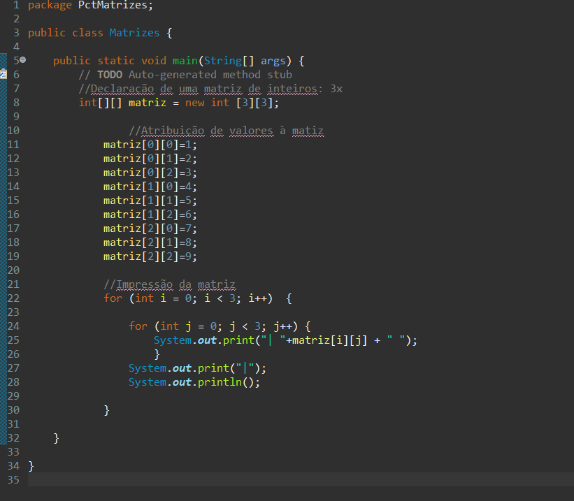
Matriz serve para fazer tabelas
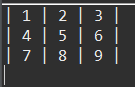
Estrutura Pré Condicionada
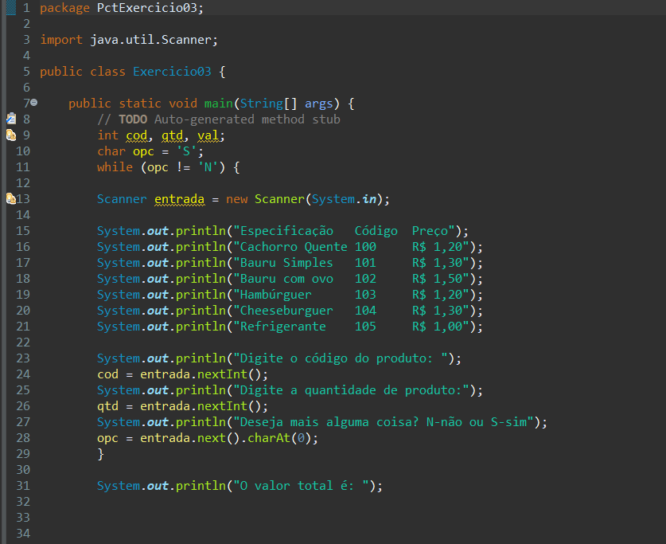
É uma estrutura que contém um looping, nesse caso, serviu para perguntar ao cluente se ele queria mais algum item
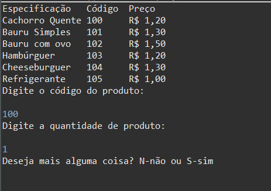
Vetores
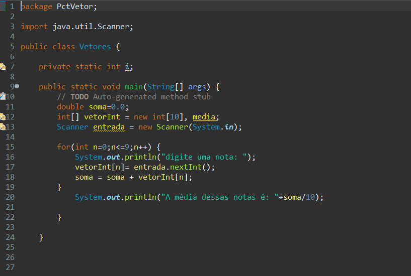
Serve para guardar varias informações em apenas um local, nesse exemplo, servi para calcular as notas que foram colocadas pelo usuário
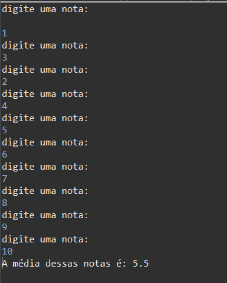
If Else
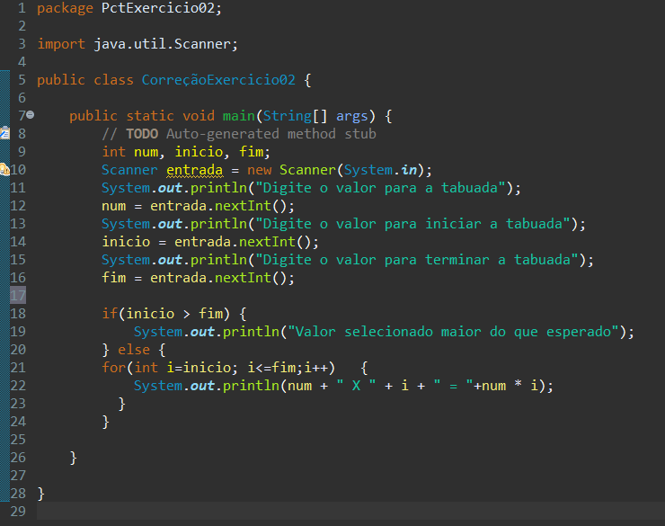
Serve para analisar se a condição se aplica ou não, nesse exemplo, serviu para verificar se o número é mais ou menor do que foi programado
Case
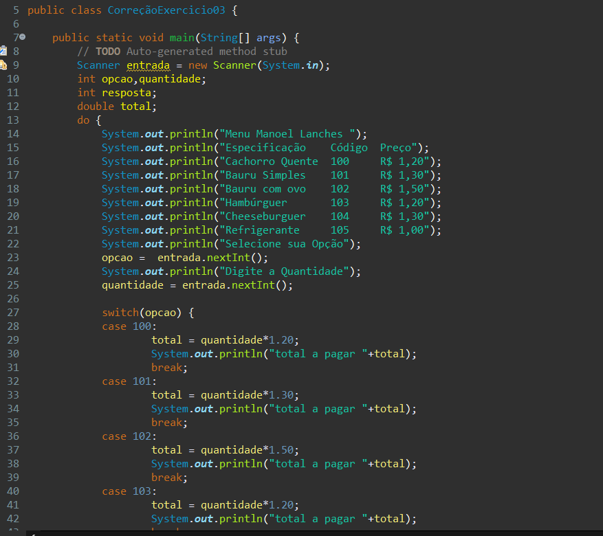
Serve para analisar em qual caso se aplica, nesse exemplo, serviu para ver em qual produto se aplicava
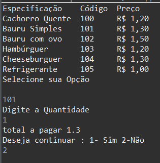
Jogo de Tabuleiro
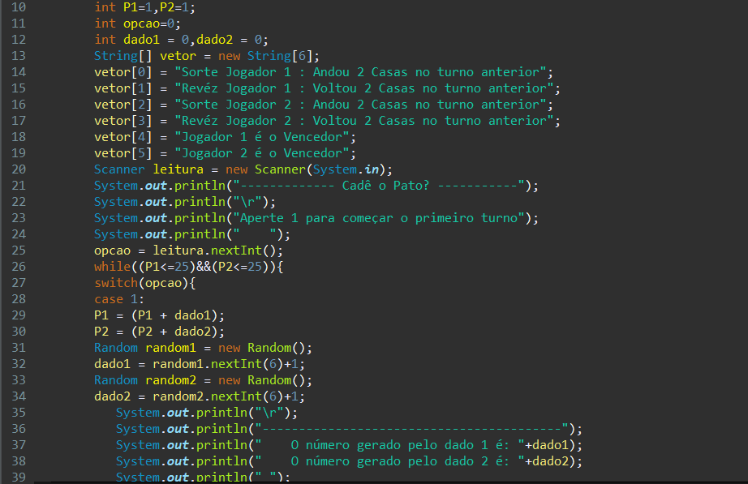
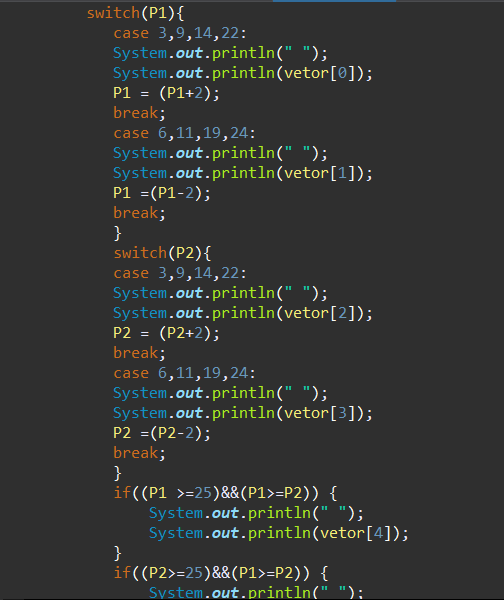
Aqui eu e meu grupo realizamos uma programação para simular como se fosse os dados do jogo de tabuleiro, nesse jogo, são jogados dois dados, um para cada participante.